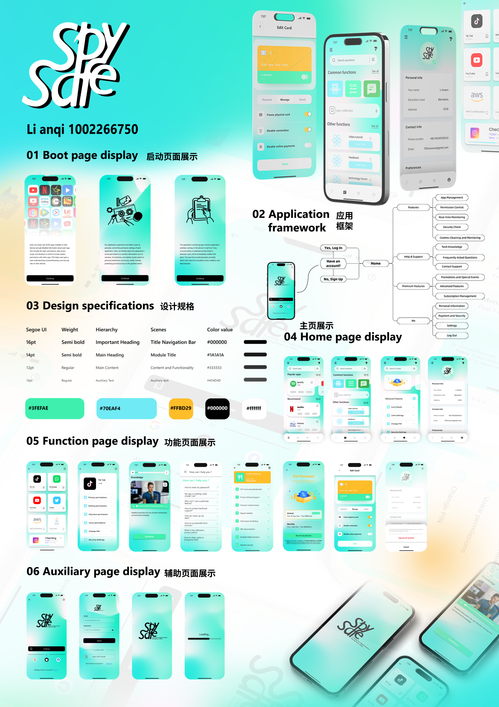

01. Selected Work
UI Design Poster

02. Collection
Participating Projects
本次小组课业作业需完成 3D 模型搭建与贴图任务，团队成员均无相关基础。我主动承担建模工作，通过 3 天高强度自主学习快速掌握 Shapr 3D 工具，独立完成小组项目模型搭建；随后使用 Adobe Dimension 完成贴图全制作，输出的成果保障了小组作业的高效推进，顺利支撑了小组作业展示。